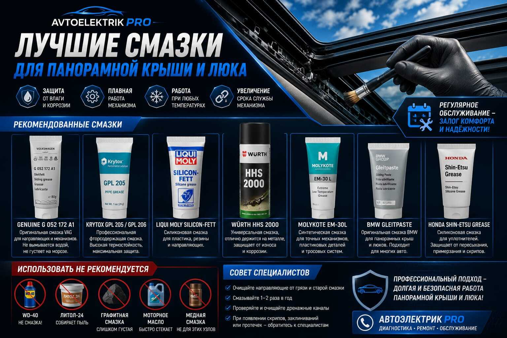

🌤️ Самостоятельное обслуживание панорамной крыши и люка автомобиля
Панорамная крыша и люк делают автомобиль более комфортным, но их механизм требует регулярного обслуживания. Многие владельцы вспоминают о нём только тогда, когда люк начинает скрипеть, открывается с рывками или через него начинает попадать вода в салон.
Хорошая новость в том, что часть профилактических работ можно выполнить самостоятельно. Главное — использовать правильные материалы и не повредить механизм.
🔧 Зачем обслуживать панорамную крышу?
Во время эксплуатации в направляющие постоянно попадают:
- пыль;
- песок;
- листья;
- грязь;
- остатки старой смазки.
Со временем загрязнения увеличивают нагрузку на электропривод и тросовый механизм, из-за чего появляются скрипы, медленная работа или заклинивание люка.
Регулярное обслуживание помогает избежать дорогостоящего ремонта.
🧰 Что понадобится?
Для профилактического обслуживания подготовьте:
- мягкую кисточку;
- салфетки из микрофибры;
- очиститель для удаления старой смазки;
- силиконовую или специальную смазку для направляющих люков;
- пластиковую лопатку для очистки труднодоступных мест.
⚠️ Не рекомендуется использовать густый литол, графитовую смазку или моторное масло. Они быстро собирают пыль и загрязнения, что только ускоряет износ механизма.
🧼 Шаг 1. Очистите направляющие
Полностью откройте люк или панорамную крышу.
Удалите листья, песок и грязь с направляющих мягкой кистью или салфеткой. Если старая смазка превратилась в плотный налёт, аккуратно удалите её специальным очистителем.
Не используйте металлические предметы — они могут повредить покрытие направляющих.
🛢️ Шаг 2. Нанесите новую смазку
После очистки нанесите небольшое количество специальной смазки тонким равномерным слоем.
После этого несколько раз полностью откройте и закройте люк, чтобы смазка распределилась по всему механизму.
Излишки обязательно удалите салфеткой.
💧 Шаг 3. Проверьте дренажные каналы
В каждом автомобиле предусмотрены дренажные отверстия, через которые уходит вода.
Если они забиваются, появляются:
- мокрый потолок;
- вода на ковриках;
- неприятный запах;
- запотевание стёкол.
Проверить дренажи можно, аккуратно налив небольшое количество воды в водоотводящий канал. Вода должна свободно выйти под автомобилем.
Если вода не уходит, дренаж нуждается в очистке.
⚠️ Что нельзя делать самостоятельно?
Не рекомендуется:
- продувать дренажи слишком высоким давлением;
- использовать металлическую проволоку;
- разбирать механизм без опыта;
- смазывать электродвигатель;
- регулировать положение стекла без специального инструмента.
Ошибки при самостоятельном ремонте могут привести к дорогостоящей замене механизма.
🚨 Когда пора обращаться в сервис?
Самостоятельная профилактика не поможет, если:
- люк заклинил;
- слышен треск или щелчки;
- панорамная крыша двигается рывками;
- стекло перекошено;
- электропривод перестал работать;
- вода продолжает попадать в салон даже после очистки дренажей.
В таких случаях необходима диагностика механизма, электропривода, тросов и направляющих.
📅 Как часто выполнять обслуживание?
Для большинства автомобилей рекомендуется:
- очищать направляющие каждые 6–12 месяцев;
- смазывать механизм не реже одного раза в год;
- проверять дренажи весной и осенью;
- проводить полную профилактику после зимнего сезона.
Если автомобиль часто эксплуатируется по грунтовым дорогам или хранится под деревьями, обслуживание стоит проводить чаще.
⭐ Почему регулярная профилактика выгоднее ремонта?
Профилактическое обслуживание занимает немного времени, но помогает:
- продлить срок службы механизма;
- сохранить плавную работу люка;
- предотвратить протечки;
- снизить нагрузку на электропривод;
- избежать дорогостоящей замены направляющих, тросов и двигателя.
Регулярный уход обходится значительно дешевле капитального ремонта.
❓ FAQ
Чем смазывать панорамную крышу?
Используйте только специальные смазки для направляющих люков и панорамных крыш или качественные силиконовые составы, рекомендованные производителем автомобиля.
Можно ли использовать WD-40?
Нет. WD-40 хорошо очищает и вытесняет влагу, но не обеспечивает долговременную смазку механизма.
Как понять, что забился дренаж?
Основные признаки — вода в салоне после дождя, влажный потолок, мокрые стойки кузова и неприятный запах сырости.
Когда нужна профессиональная диагностика?
Если люк перестал открываться, работает с рывками, издаёт посторонние звуки или пропускает воду после самостоятельной очистки, необходимо обратиться в сервис.
🌤️ Автоэлектрик Олег
Самостоятельное обслуживание панорамной крыши помогает сохранить её работоспособность и избежать многих неисправностей. Однако при первых признаках заклинивания, протечек или некорректной работы электропривода лучше провести профессиональную диагностику. Это позволит своевременно выявить износ деталей, предотвратить серьёзные поломки и значительно продлить срок службы механизма.

✅ Смазки, которые подходят для обслуживания панорамной крыши и люка
🔹 GENUINE G 052 172 A1 (VAG)
Оригинальная смазка для направляющих панорамных крыш и люков автомобилей Volkswagen, Audi, Škoda и SEAT.
Преимущества:
- не густеет на морозе;
- не вымывается водой;
- не собирает большое количество грязи;
- обеспечивает плавную работу направляющих.
🔹 Krytox GPL 205 / GPL 206
Профессиональная фторсодержащая смазка, применяемая многими автопроизводителями.
Плюсы:
- работает при температурах от -50 до +250 °C;
- не разрушает пластик и резину;
- практически не стареет;
- отлично подходит для дорогих панорамных крыш.
🔹 Liqui Moly Silicon-Fett
Качественная силиконовая смазка для пластиковых и резиновых элементов.
Подходит для:
- направляющих;
- уплотнителей;
- пластиковых роликов.
🔹 Würth HHS 2000
Одна из самых популярных сервисных смазок.
Особенности:
- после нанесения становится густой;
- отлично держится на металле;
- защищает от коррозии;
- уменьшает шум механизма.
🔹 Molykote EM-30L
Профессиональная синтетическая смазка для точных механизмов.
Используется для:
- пластиковых шестерён;
- роликов;
- направляющих;
- тросовых механизмов.
🔹 BMW Gleitpaste
Оригинальная смазка BMW для механизмов панорамной крыши.
Хорошо подходит и для автомобилей других марок.
🔹 Honda Shin-Etsu Grease
Хотя чаще применяется для уплотнителей дверей, также отлично защищает резиновые уплотнители панорамной крыши от пересыхания, примерзания и появления скрипов.
⚠️ Что использовать НЕ рекомендуется
❌ WD-40 — это очиститель и влаговытеснитель, а не долговременная смазка.
❌ Литол-24 — быстро собирает пыль и песок, из-за чего направляющие начинают работать тяжелее.
❌ Графитовая смазка — слишком густая и может ускорить износ пластиковых деталей.
❌ Моторное масло — быстро стекает и практически не защищает механизм.
❌ Медная смазка — предназначена для высокотемпературных соединений, а не для механизмов люка.
💡 Совет специалистов
Для большинства автомобилей оптимальным выбором являются:
- оригинальная смазка производителя (если она доступна);
- Krytox GPL 205/206 — для максимального ресурса и долговечности;
- Würth HHS 2000 — для металлических направляющих;
- Liqui Moly Silicon-Fett — для пластиковых элементов и резиновых уплотнителей.
🌐 Вызвать автоэлектрика в Алматы
☎️ 8-701-121-11-10 Олег
Читайте также: «Как проверить датчик распредвала» и «Hyundai Tucson 2019 — обслуживание системы впрыска».
Нужна помощь? Компьютерная диагностика авто в Алматы — выезд по городу и области.